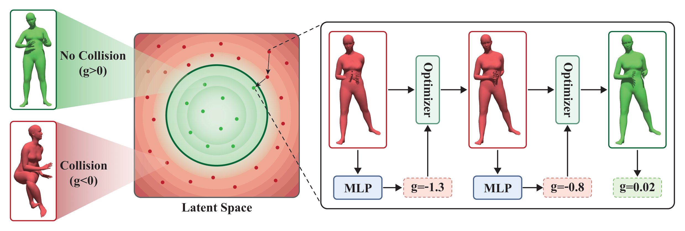

Human pose and motion generators often produce plausible movement that still contains geometric self-collisions. PoseShield addresses this as a post-hoc collision-resolution problem: given an existing SMPL-H pose or motion, it finds a nearby collision-free result while preserving the original pose semantics and temporal dynamics.
The core component is a neural collision field defined directly in SMPL-H pose space. The field is trained to separate self-intersecting and collision-free configurations and is regularized with an Eikonal-style objective, providing stable gradients near the collision boundary for constrained optimization.

PoseShield models self-collision as a neural field directly in SMPL-H pose space: positive scores indicate collision-free poses, while negative scores indicate self-collisions. The learned field provides differentiable gradients that project colliding poses and motion latents back toward the collision-free region while preserving the original pose or action.
Each card is a local 3D before/after scene: yellow marks precomputed contact vertices on the red input, and green shows the PoseShield result. Drag to rotate; scroll or pinch to zoom.
Selected motion examples show red colliding inputs with yellow contact regions and green PoseShield outputs. The emphasis is on removing self-collision while keeping the visible action and timing close to the original motion.
PoseShield can remove the geometric self-collision while changing the apparent motion semantics more than desired. These examples show collision-clean outputs where the original action becomes less faithful.
HwC contains 931k SMPL-H poses: 531k self-colliding examples (57%) and 399k collision-free examples (43%), split 9:1 for training and testing. Red viewers show self-colliding samples with yellow contact vertices; green viewers show collision-free samples. Part of the source data comes from MotionFix.
The pose benchmark asks whether a colliding input becomes collision-free and how much penetration is reduced. PoseShield improves both resolution rates, showing that the learned field works as a practical post-hoc collision constraint rather than only a detector.

PoseShield currently follows the paper setting and assumes the neutral SMPL-H body model with no subject-specific shape parameters. Applying the method to other SMPL body shapes, character-specific SMPL humans, Momentum Human Rig, or other human parametric models may require building a collision dataset for the target body model and retraining the collision field.
We also explored a preliminary shape-aware SAField variant. These experiments suggest that adding shape conditioning is feasible, rather than a fundamental limitation, but it is treated as an experimental extension rather than the primary PoseShield release path.
Code, checkpoints, and released data assets are available below.
@article{li2026poseshield,
title={PoseShield: Neural Collision Fields for Human Self-Collision Resolution},
author={Li, Zhengyuan and Deng, Zeyun and Shen, Yifan and Gui, Liangyan and Xie, Miaolan and Campbell, Joseph and Gao, Xifeng and Wu, Kui and Pan, Zherong and Bera, Aniket},
journal={arXiv preprint arXiv:2606.29686},
year={2026}
}